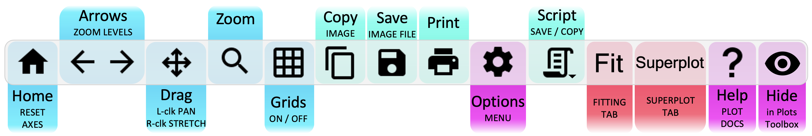
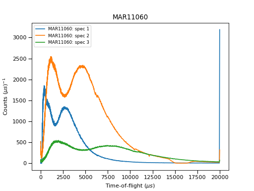
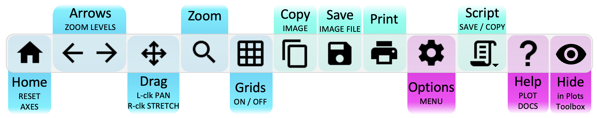
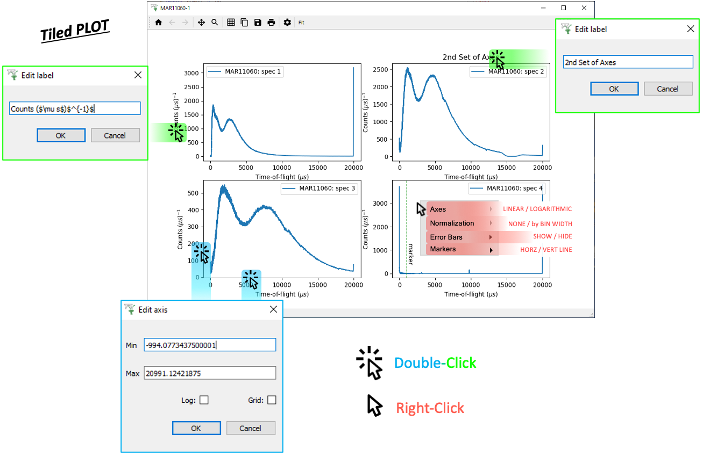
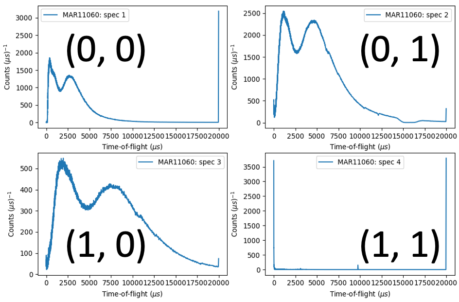
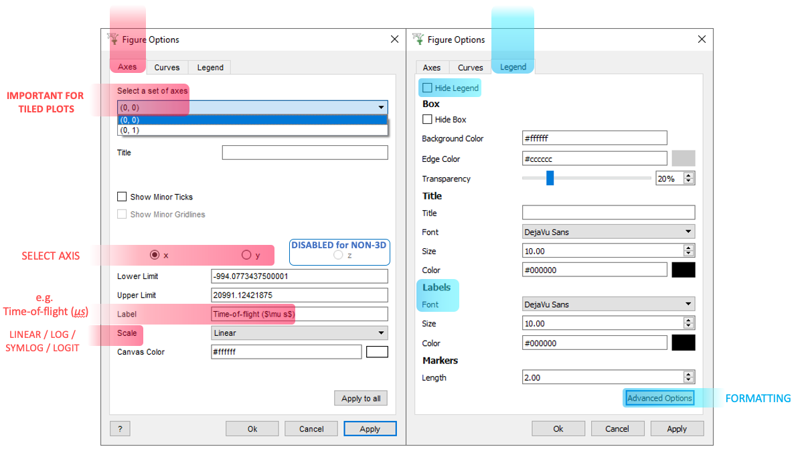
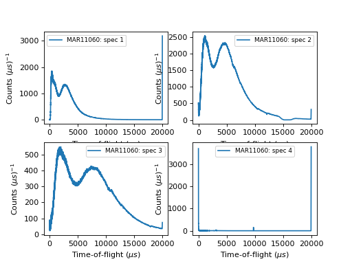
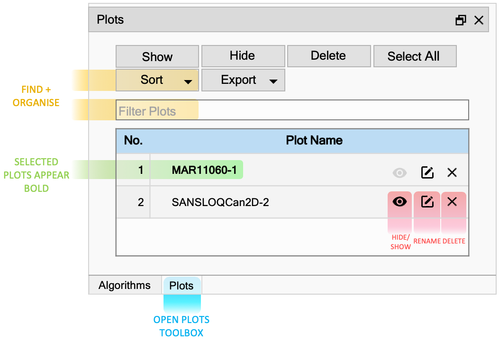
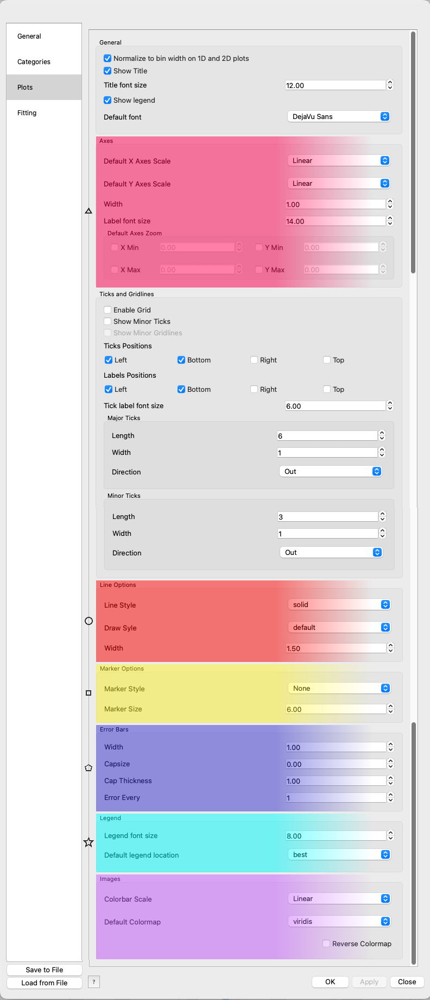

Basic 1D and Tiled Plots#
Other Plot Types
General Plot Help
Single 1D Plots#
To create a single 1D plot, right-click on a workspace and select Plot > Spectrum....
Check the Plot Type is set to Individual before choosing which spectra to plot and selecting OK.
Plot Toolbar#

{kind=link}
{kind=link}
Scripting#
Click the generate a script button on a 1D Plot:
{kind=link}
# import mantid algorithms, numpy and matplotlib
from mantid.simpleapi import *
import matplotlib.pyplot as plt
from mantid.plots.utility import MantidAxType
MAR11060 = Load('MAR11060')
fig, axes = plt.subplots(edgecolor='#ffffff', num='MAR11060-1', subplot_kw={'projection': 'mantid'})
axes.plot(MAR11060, color='#1f77b4', label='MAR11060: spec 1', wkspIndex=0)
axes.plot(MAR11060, color='#ff7f0e', label='MAR11060: spec 2', wkspIndex=1)
axes.plot(MAR11060, color='#2ca02c', label='MAR11060: spec 3', wkspIndex=2)
axes.tick_params(axis='x', which='major', **{'gridOn': False, 'tick1On': True, 'tick2On': False, 'label1On': True, 'label2On': False, 'size': 6, 'tickdir': 'out', 'width': 1})
axes.tick_params(axis='y', which='major', **{'gridOn': False, 'tick1On': True, 'tick2On': False, 'label1On': True, 'label2On': False, 'size': 6, 'tickdir': 'out', 'width': 1})
axes.set_title('MAR11060')
axes.set_xlabel('Time-of-flight ($\\mu s$)')
axes.set_ylabel('Counts ($\\mu s$)$^{-1}$')
legend = axes.legend(fontsize=8.0).set_draggable(True).legend
fig.show()
(Source code, png, hires.png, pdf)
{kind=link}
{kind=link}

For more advice: Formatting Plots with a script
Tiled Plots#
To create a tiled plot, right-click on a workspace and select Plot > Spectrum....
Check the Plot Type is set to Tiled before choosing which spectra to plot and selecting OK.
Plot Toolbar#

Click Menus#
{kind=link}

ptions Menu#
Tiled plots are essentially an array of axes (1D plots) on the same figure. As such, when editing them in the Options Menu, you should take care to select the correct set of axes:


Scripting#
An example script for a Tiled Plot:
# import mantid algorithms, numpy and matplotlib
from mantid.simpleapi import *
import matplotlib.pyplot as plt
from mantid.plots.utility import MantidAxType
MAR11060 = Load('MAR11060')
fig, axes = plt.subplots(edgecolor='#ffffff', ncols=2, nrows=2, num='MAR11060-1', subplot_kw={'projection': 'mantid'})
axes[0][0].plot(MAR11060, color='#1f77b4', label='MAR11060: spec 1', wkspIndex=0)
axes[0][0].set_xlabel('Time-of-flight ($\\mu s$)')
axes[0][0].set_ylabel('Counts ($\\mu s$)$^{-1}$')
legend = axes[0][0].legend(fontsize=8.0) #.set_draggable(True).legend # uncomment to set the legend draggable
axes[0][1].plot(MAR11060, color='#1f77b4', label='MAR11060: spec 2', wkspIndex=1)
axes[0][1].set_xlabel('Time-of-flight ($\\mu s$)')
axes[0][1].set_ylabel('Counts ($\\mu s$)$^{-1}$')
legend = axes[0][1].legend(fontsize=8.0) #.set_draggable(True).legend # uncomment to set the legend draggable
axes[1][0].plot(MAR11060, color='#1f77b4', label='MAR11060: spec 3', wkspIndex=2)
axes[1][0].set_xlabel('Time-of-flight ($\\mu s$)')
axes[1][0].set_ylabel('Counts ($\\mu s$)$^{-1}$')
legend = axes[1][0].legend(fontsize=8.0) #.set_draggable(True).legend # uncomment to set the legend draggable
axes[1][1].plot(MAR11060, color='#1f77b4', label='MAR11060: spec 4', wkspIndex=3)
axes[1][1].set_xlabel('Time-of-flight ($\\mu s$)')
axes[1][1].set_ylabel('Counts ($\\mu s$)$^{-1}$')
legend = axes[1][1].legend(fontsize=8.0) #.set_draggable(True).legend # uncomment to set the legend draggable
fig.show()
(Source code, png, hires.png, pdf)
{kind=link}
{kind=link}

For more advice: Formatting Plots with a script
General#
General Plot Help
Plots Toolbox#
{kind=link}

File > Settings#
{kind=link}

Other Plotting Documentation